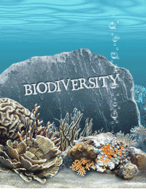
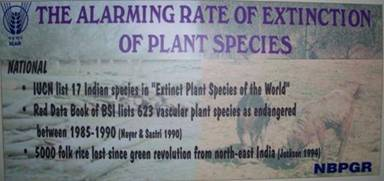

Biodiversity encompasses the variety of all life on earth. India is one of the 12-mega diverse countries of the world. With only 2.5% of the land area, India already accounts for 7.8% of the global recorded species. India is also rich in traditional and indigenous knowledge, both coded and informal.

India is a Party to the Convention on Biological Diversity (1992).Recognizing the sovereign rights of States to use their own biological resources, the Convention expects the parties to facilitate access to genetic resources by other Parties subject to national legislation and on mutually agreed upon terms (Article 3 and 15 of CBD). Article 8(j) of the Convention on Biological Diversity recognizes contributions of local and indigenous communities to the conservation and sustainable utilization of biological resources through traditional knowledge, practices and innovations and provides for equitable sharing of benefits with such people arising from the utilization of their knowledge, practices and innovations.
Biodiversity is a multi-disciplinary subject involving diverse activities and actions. The stakeholders in biological diversity include the Central Government, State Governments, institutions of local self-governmental organizations, industry, etc. One of the major challenges before India lies in adopting an instrument ,which helps realise the objectives of equitable sharing of benefits enshrined in the Convention on Biological Diversity.
After an extensive and intensive consultation process involving the stakeholders, the Central Government has brought Biological Diversity Act,2002 with the following salient features:-
|
|---|
The International Day for
Biological Diversity (or World Biodiversity Day) is an UN-sanctioned
international holiday for the promotion of biodiversity issues. It is
currently held on May 22.
Recently, the Millennium Ecosystem Assessment (MA), indicated that
climate change is likely to become the dominant direct driver of
biodiversity loss by the end of the century. Current climate change
estimates predict increases in temperatures of 1.4°C to 5.8°C by 2100.
This will affect species in several ways such as: changes in
distribution; increased extinction rates; changes in reproduction
timings; and changes in length of growing seasons for plants
 |
From its creation by the
Second Committee of the UN General Assembly in 1993 until 2000, it was
held on December 29 to celebrate the day the Convention on Biological
Diversity went into effect. In December 2000, the date was shifted to
commemorate the adoption of the Convention on May 22, 1992 at the Rio
Earth Summit, and partly to avoid the many other holidays that occur in
late December.
The rich variety of life on Earth has always had to deal with a
changing climate. However, the unprecedented pace of change we are
presently experiencing is so rapid that a great number of species can
not adapt fast enough to the new conditions, or move to regions more
suited for their survival due to habitat fragmentation. In fact, recent
estimates show that up to a million species may become extinct as a
result of climate change.
On the positive side, biodiversity can help to reduce the
effects of climate change on the world’s population and ecosystems.
Indeed, the links between biodiversity and climate change run both
ways: biodiversity is threatened by climate change, but biodiversity
resources can reduce the impacts of climate change. It is therefore
crucial to conserve biodiversity that is especially sensitive to
climate change, preserve habitats so as to facilitate the long-term
adaptation of biodiversity, improve our understanding of climate change
and biodiversity linkages, and fully integrate biodiversity
considerations into mitigation and adaptation improved. This
constitutes plans. If the threats of biodiversity loss and climate
change are tackled together, the prospects for adapting successfully to
the challenges of the coming decades will be very much the overall
message for this year’s celebration of the International Day for
Biological Diversity.
The National Biodiversity Authority established in 2003 by the
Government of India to regulate, conserve and sustainable use of
bioresources of India through the Biological Diversity Act, 2002 lists
what has been done throughout the years to celebrate the International
Day for Biological Diversity and informs CBD. Hence you are requested
to kindly inform National Biodiversity Authority on the activities made
during the World Biodiversity Day to the Secretary, NBA (nba_india@vsnl.net)
BIOLOGICAL DIVERSITY ACT 2002 AND ESTABLISHMENT OF NATIONAL BIODIVERSITY AUTHORITY ,CHENNAI
ndia is party to the Convention on Biological Diversity
(CBD) 1992 which recognizes the sovereign rights of states to use their
own Biological Resources. In order to help in realizing the objectives
of CBD, India has enacted an umbrella legislation called the
biological Diversity Act 2002(No.18 of 2003) aimed at conservation of
biological resources and associated knowledge as well as facilitating
access to them in a sustainable manner and through a just process.
In exercise of the powers conferred by Sub-Section (1) (4) of
Section 8 of the Biological Diversity Act, 2002 (18 of 2003), the
Central Government has established a body called the National
Biodiversity Authority, on and from the 1st day of October,
2003. The main functions of the Authority are :
a) To lay down procedures and guidelines to govern the activities
provided under Section 3, 4, and 6. (Permission to
foreigners/NRI’s foreign companies)
i)For obtaining any biological resource (Section -3).
ii)For transferring the results of any research (Section -4).
iii)Certain collaborative research projects exempted (Section 5).
b) To advice the Government of India. Specific areas mentioned as per the Act are the following:
i)Notifications of threatened species (Section -38).
ii)Designate institutions as repositories for different categories of biological resources (Section -39).
iii)Exempt certain biological resources, normally traded as commodities (Section -40)
c) To encourage setting up State Biodiversity Boards
d) To build up database and documentation system
e) To creat awareness through mass media
i. Training of personnel
ii. Necessary measures in the areas of Intellectual Propriety Rights.
For details on the Biological Diversity Act 2002 and the Rules and various notifications ,formats etc prescribed under the Act , please browse( www.nbaindia.org)
SALIENT PROVISIONS OF BIOLOGICAL DIVERSITY ACT, 2002